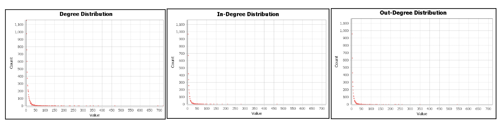
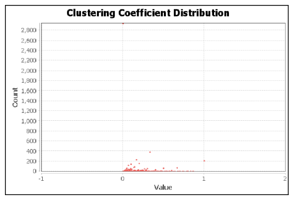
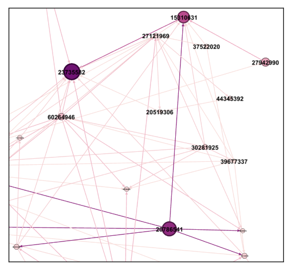
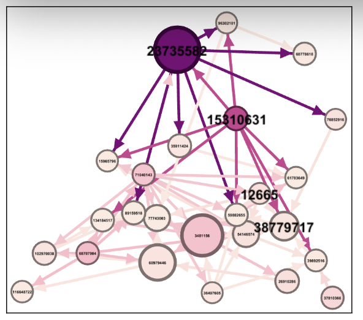
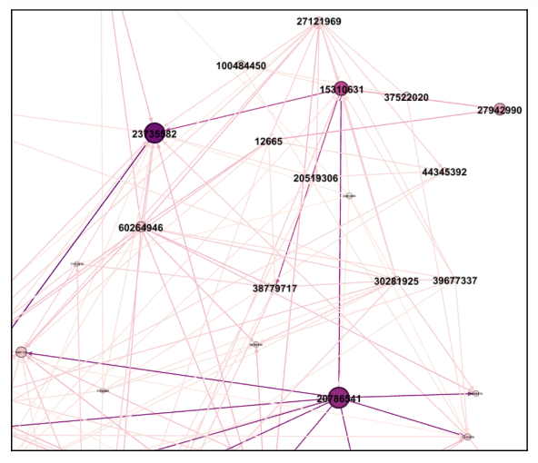
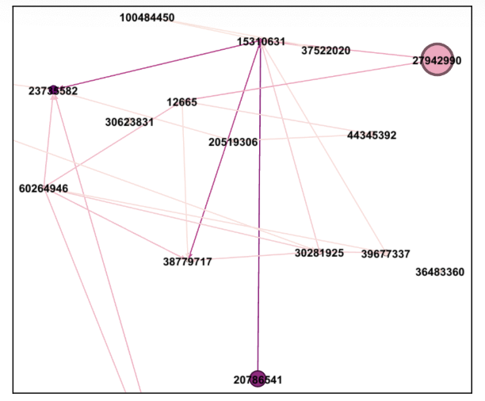

This project is based on a case study from Harvard Business Publishing titled “Who is the Right Influencer? A Social Network Analysis.” The case centers around a fictional company, Space Games Inc. (SGI), which is preparing to launch a new game and must choose the most effective influencers on Twitch. Rather than selecting influencers based solely on follower count, this analysis uses Social Network Analysis (SNA) to uncover deeper insights about influence, reach, and network dynamics within the Twitch community.
This project provides a structured approach that combines data visualization (using Gephi) and profitability modeling to answer questions like:
The dataset contains information on 7,126 Twitch streamers and 3,524 connections (follows) between them. It includes variables such as:
This data provides a rich foundation for understanding the structure and behavior of streamers on Twitch, allowing for deeper network-based analysis.
Most streamers have 1,000–50,000 views, with a peak around 10,000. Only a few creators achieve millions of views, suggesting a small group drives most engagement.
Majority of streamers are non-affiliates, meaning they haven’t joined Twitch’s affiliate program. This indicates that few meet the program’s eligibility requirements.
Over half of Twitch streamers label their content as mature, suggesting that adult-oriented themes dominate the platform.
Most streamers have been active between 3 to 7 years, with fewer new streamers joining recently — suggesting a maturing platform.
Affiliates typically have higher median views, indicating stronger engagement. However, non-affiliates show more variation with some very high outliers.
Each Twitch streamer is connected to an average of 4.96 other streamers. This suggests a relatively sparse network, so identifying streamers with much higher degrees may be critical for maximizing influence.
In-degree and out-degree distributions both follow a long-tail pattern, with a few streamers receiving or following many others.
The network is undirected with a diameter of 10, radius of 6, and average path length of 3.68. This suggests it takes around 3–4 steps to connect any two streamers, indicating a moderately connected structure.
Various centrality measures were computed to identify key influencers:
The average clustering coefficient is 0.156 with 29,266 total triangles, suggesting that small tightly-knit communities exist, though overall clustering is low.
To support the marketing campaign for Space Games Inc.’s upcoming title, we identified three key Twitch influencers: Channel ID: 23735582, 15310631, and 20786541. These were selected using a multi-metric evaluation based on their network position and audience reach:
This measures how frequently a streamer appears on the shortest paths between other users in the network. A high betweenness score suggests the streamer is a crucial connector who can efficiently spread information.
Channel 23735582, 15310631, and 20786541 rank top in this metric.
This metric considers both the number and importance of connections. A streamer with high eigenvector centrality is well-connected to other influential users, amplifying their total reach.
Channel 23735582 and 15310631 have the two highest values here.
Degree represents the number of direct follower/following connections a streamer has. A higher degree indicates a broader presence in the network and greater exposure.
Channel 20786541, 23735582, and 15310631 lead this metric.
This reflects total audience attention a streamer has attracted. A high view count suggests a streamer already commands strong engagement.
Channel 20786541, 23735582, and 15310631 are ranked 2nd–4th by view count.
Conclusion: While each metric captures different aspects of influence, these three streamers Channel ID: 23735582, 15310631, and 20786541 consistently rank at the top . They offer a strategic mix of reach, authority, and audience engagement—making them ideal partners for the upcoming campaign.
To estimate the financial return of partnering with each influencer, we follow a four-step ROI calculation process:
Assumptions Used:
Note: The views for each influencer were sourced from the Gephi-exported data table. ROI assumptions are based on current industry standards and publicly available benchmark data.
import pandas as pd
# create influencer table
influencers = [
{"Channel_ID": 23735582, "Views": 46682923},
{"Channel_ID": 15310631, "Views": 20253246},
{"Channel_ID": 20786541, "Views": 8350681},
]
# set up parameters
engagement_rate = 0.05 # 5%
conversion_rate = 0.03 # 3%
revenue_per_purchase = 30 # game revenue $30
influencer_cost = 7000 # paid to influencer
marketing_expenses = 3000 # extra marketing fee
# calculate revenue
for influencer in influencers:
expected_revenue = influencer["Views"] * engagement_rate * conversion_rate * revenue_per_purchase
expected_profit = expected_revenue - (influencer_cost + marketing_expenses)
influencer["Expected Revenue"] = round(expected_revenue, 2)
influencer["Expected Profit"] = round(expected_profit, 2)
df_influencers = pd.DataFrame(influencers)
# show DataFrame
display(df_influencers)
Result Summary: Among the three influencers, Channel 23735582 delivers the highest expected profit and ROI, making it the most financially promising partnership choice.